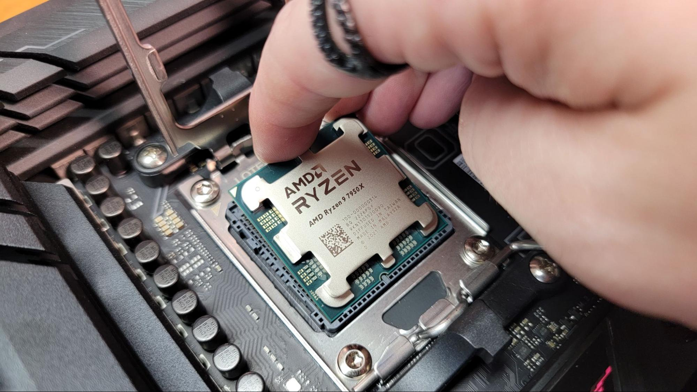

Návod k sestavení PC
Sestavení PC (osobního počítače) může být zábavný a uspokojující proces, který vám umožní přizpůsobit systém přesně vašim potřebám.
1. Vyberte komponenty:
Nejprve je potřeba vybrat jednotlivé komponenty, které budou tvořit váš počítač. Zde jsou základní komponenty, které budete potřebovat:
- Procesor (CPU): Srdce počítače, které provádí všechny výpočty.
- Základní deska (Motherboard): Deska, do které se připojí všechny komponenty.
- Paměť RAM: Slouží jako dočasné úložiště dat, která procesor aktuálně zpracovává.
- Grafická karta (GPU): Pokud plánujete hrát hry nebo pracovat s grafikou, budete potřebovat dedikovanou grafickou kartu.
- Úložiště (SSD/HDD): Pevný disk nebo SSD pro ukládání dat a operačního systému.
- Zdroj napájení (PSU): Zajišťuje napájení všech komponent.
- Počítačová skříň (Case): Chrání a uspořádává všechny komponenty.
- Chladič procesoru (Cooler): Zajišťuje, aby procesor zůstal v bezpečné teplotě. (Některé procesory mají chladič v balení.)
- Operační systém: Např. Windows, Linux apod.
| Komponenty |
Doporučený výkon PSU |
| Integrovaná grafika (na desce) |
300-400 W |
| Low-end GPU (např. GTX 1650) |
400-450 W |
| Mainstream GPU (např. GTX 1660) |
450–500 W |
| Mainstream GPU (RTX 2060/3060) |
500–550 W |
| High-end GPU (RTX 2070/3070) |
600–650 W |
| High-end GPU (RTX 2080/3080) |
650–750 W |
| Extreme GPU (RTX 3090) |
750–850 W |
| SLI/Crossfire (více GPU) |
850 W a více |
2. Připravte pracovní prostor:
- Vyberte si čistý a antistatický prostor, kde budete sestavovat počítač.
- Ujistěte se, že máte všechny potřebné nástroje, například šroubovák a antistatický náramek.
3. Montáž základní desky:
- Opatrně vyjměte základní desku z obalu a položte ji na antistatický povrch.
- Nainstalujte procesor do soketu základní desky. Ujistěte se, že zarovnáte značky na procesoru se značkami na soketu.
- Naneste teplovodivou pastu na procesor (pokud chladič nemá předem nanesenou pastu) a nainstalujte chladič procesoru.
- Vložte paměťové moduly RAM do příslušných slotů na základní desce.

4. Příprava skříně:
- Připravte skříň otevřením bočních panelů a vyjmutím případných šroubů.
- Vložte základní desku do skříně a připevněte ji pomocí šroubů na správných místech.
5. Instalace dalších komponentů:
- Nainstalujte grafickou kartu do příslušného PCI-E slotu.
- Připojte úložiště (SSD nebo HDD) do příslušných slotů a připojte k základní desce a napájecím kabelům.
- Připojte zdroj napájení (PSU) do skříně a zajistěte ho šrouby.
- Připojte všechny potřebné napájecí kabely ke komponentám (24-pin ATX kabel pro základní desku, 8-pin EPS kabel pro CPU,
PCI-E kabely pro grafickou kartu, napájecí kabely pro disky atd.).
6. Kontrola a připojení kabelů:
- Ujistěte se, že všechny kabely jsou správně připojeny a bezpečně zajištěny.
- Připojte přední panel skříně (USB, audio, tlačítka napájení atd.) k základní desce.

7. Testování:
- Předtím, než uzavřete skříň, připojte monitor, klávesnici, myš a napájecí kabel.
- Zapněte počítač a sledujte, zda se spustí a rozpozná všechny komponenty. V případě problémů zkontrolujte správnost připojení.
8. Instalace operačního systému:
- Po úspěšném spuštění vložte instalační médium operačního systému (např. USB disk s Windows) a postupujte podle pokynů na obrazovce.
9. Dokončení montáže:
- Po instalaci operačního systému a ovladačů zavřete boční panely skříně a zajistěte je.
10. Optimalizace a údržba:
- Aktualizujte operační systém, nainstalujte antivirový software a ovladače pro všechny komponenty.